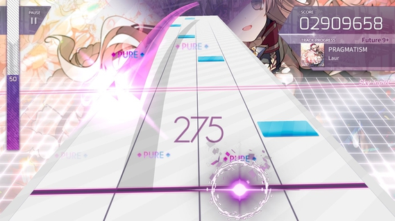
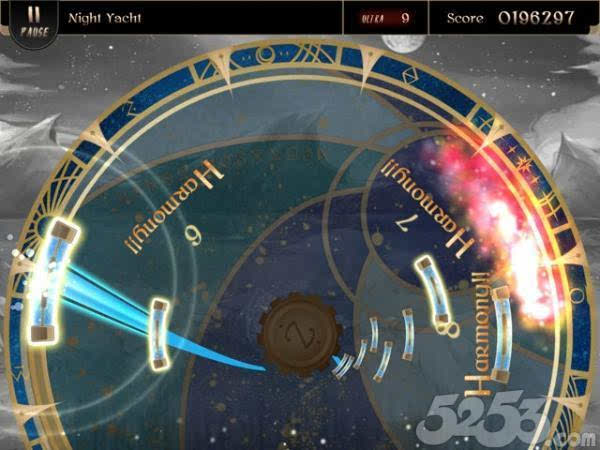

移动端音游
移动端音游是对一般如人而言最为方便的接触到音游这一游戏类型的方式，移动端的音游虽然体验上比不上街机端音游，不过移动端音游最大的强处就是只要从口袋里掏出手机就可以游玩。知名的移动端音游有Arcaea，Lanota，Deemo，Muse
Dash，Dynamix，cytus，phigros等等，选择很多，极其适合一般路人入坑。
以下是几个知名的移动端音游介绍。

Arcaea是由英国游戏开发商 lowiro
开发的音乐游戏,其最大的特点即是它是一款立体下落式音乐游戏。和一般的移动端音游不同，Arcaea中音符会落在两条不同的判定线：地面和天空。地面侧判定线和一般的下落式相似，天空侧判定线则包含3D操作。
note分为Tap，Hold，ArcTap，Arc。
Tap: 在音符底部到达判定线内时直接单击即可。
Hold: 接触判定线时一直按住，长按至音符尾部到达判定线即可放手。
ArcTap: 在到达"天空"判定线时直接单击即可，只会出现在Trace（轨道线）上。
Arc:即音弧，接触"天空"判定线时按住并按照形状滑动，同一个这样的音符的note必须用同一个手指，若试图换成另一只手指糊过去时会导致断连，不同颜色的Arc用同一根手指接也是这样（特殊情况除外，例如两/三个不同颜色的Arc重合或是Arc转弯时），Arc的默认颜色为左手蓝右手红，在色彩辅助下，左手音弧的颜色会比平时更鲜艳一些，而右手音弧的颜色会变为黄色。
游戏中单音符的判定有三种： PURE、 FAR和 LOST。
PURE：在±50ms误差内击中音符时取得该判定，被细分为MAX PURE和PURE，其中Tap音符击中误差在25ms以内即为Max.
Pure、误差在25ms-50ms之间为Pure，地面Hold和天空音弧击中即为Max Pure。
FAR：差在50ms-100ms之间取得该判定，地面Hold和天空音弧两种音符没有FAR判定。
LOST：在+100ms-120ms之间击中音符或未击中取得该判定。

Lanota是由台灣遊戲開發商Noxy
Games研發的音樂節奏遊戲.它是一款下落式音乐游戏。不过和一般的移动端音游不同，遊戲在一個會移動、轉圈的盤子上進行，下落方向也可能是360度中的任意方向。
note分为CLICK，FLICK，CATCH，RAIL。
CLICK: 當note到達判定線時單擊。
FLICK & FLICK: 當note到達判定線時依照指示方向滑動。
CATCH: 將手指置於note前直接接取。此種音符沒有Tune判定。
RAIL: 手指按住note並按形狀滑動直至尾端。此種音符沒有Tune判定。
游戏中单音符的判定有三种：Harmony、Tune、Fail
Harmony 判定範圍是±60ms。
Tune 判定範圍是±60-120ms。，此判定將會賦予Harmony判定50%的分數，但不會影響連擊數.br>
Fail 為未擊中或偏差過大。被賦予此判定的音符將不會獲得分數，此判定出現時連擊數歸零。